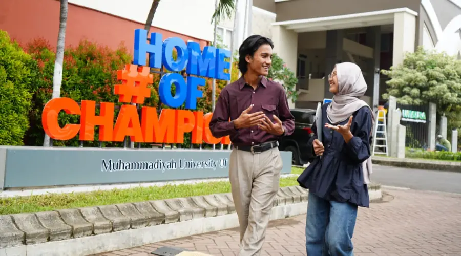
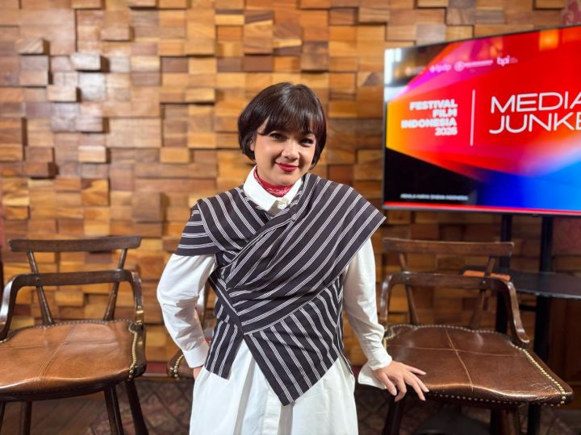
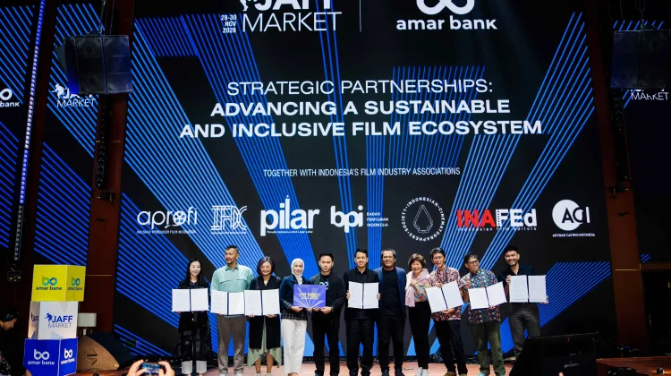

Umsura Resmi Buka S1 Film dan Industri Digital Tahun Akademik 2026/2027
Universitas Muhammadiyah Surabaya resmi membuka Program Studi S1 Film dan Industri Digital di bawah Fakultas Pendidikan, Komunikasi, dan Sains untuk tahun akademik 2026/2027 berdasarkan Keputusan Menteri Pendidikan Tinggi, Sains, dan Teknologi Nomor 729/B/O/2026 tertanggal 24 Juli 2026. Pembukaan prodi ini bertujuan melahirkan sineas berkapasitas intelektual yang mampu menggali narasi sosial serta berdaya saing global melalui kurikulum berlandaskan tiga pilar utama, yaitu Artificial Intelligence, creator economy, dan Intellectual Property. Didukung berbagai mata kuliah unggulan seperti AI Filmmaking & Virtual Production, Creator Economy & Digital Content Business, serta Future Media Lab: XR, AI & Immersive Experiences, para lulusan disiapkan untuk mengisi peluang karier yang luas di sektor perfileman, produksi konten digital dan streaming, teknologi media baru, industri berbasis AI, hingga kewirausahaan kreatif.

Jadi Duta FFI 2026, Nirina Zubir Ingin Film Indonesia Dikenal di Internasional
Jakarta: Aktris sekaligus Duta Festival Film Indonesia (FFI) 2026, Nirina Zubir, melihat adanya perubahan dalam industri perfilman Indonesia dari masa ke masa. Menurutnya, film Indonesia kini semakin beragam, baik dari sisi genre maupun cerita yang diangkat. Nirina yang telah berkecimpung di dunia perfilman sejak usia muda mengatakan perkembangan tersebut menjadi salah satu hal yang menarik untuk dilihat dalam perjalanan industri film Tanah Air. Ia menilai perfilman Indonesia saat ini tidak lagi hanya didominasi oleh genre tertentu. Jika sebelumnya film yang banyak mendapat perhatian masyarakat cenderung berasal dari genre horor dan komedi, kini semakin banyak cerita dengan warna yang berbeda. "Genre sih, kalau kita lihat sekarang film Indonesia itu lebih berwarna," kata Nirina kepada Metrotvnews.com, Jumat, 18 September 2026. Menurut Nirina, keberagaman tersebut terlihat dari semakin banyaknya film yang menghadirkan cerita dan karakter yang berbeda. Bahkan, film dengan cerita anak-anak pun kini mendapat ruang dan perhatian dari penonton. Perubahan tersebut juga terlihat dari semakin luasnya apresiasi masyarakat terhadap karya film Indonesia. Menurut Nirina, sebuah film kini bisa mendapatkan apresiasi dengan jumlah penonton yang cukup besar. "Apresiasinya sekarang yang nonton bisa sampai puluhan juta, wow keren banget dan pemerannya itu anak anak," lanjutnya. Menurut Nirina, perkembangan tersebut menjadi modal penting bagi perfilman Indonesia untuk terus tumbuh. Bukan hanya dari sisi jumlah penonton di dalam negeri, tetapi juga dari keberagaman cerita dan potensi yang dapat diperkenalkan kepada masyarakat yang lebih luas

JAFF Market 2026 Perkuat Ekosistem Industri Film Indonesia
Industri perfilman Indonesia terus menunjukkan pertumbuhan positif di tengah persaingan yang semakin ketat, sehingga Jogja-NETPAC Asian Film Festival (JAFF) kembali menggelar JAFF Market 2026 sebagai pasar film pertama dan terbesar di Indonesia guna memperkuat ekosistem perfilman nasional. Kegiatan yang akan berlangsung pada 28–30 November 2026 di Jogja Expo Center (JEC), Yogyakarta, ini mengusung slogan "The Biggest Film Market in Indonesia" dan berfokus pada penguatan seluruh rantai industri dari hulu ke hilir. Menurut Market Director JAFF Market, Linda Gozali, industri film Indonesia kini memasuki fase lebih matang yang tidak hanya mengejar kuantitas produksi atau jumlah penonton, melainkan juga pembangunan ekosistem yang berkelanjutan dan berdaya saing global. Senada dengan itu, Festival Director JAFF, Ifa Isfansyah, menegaskan bahwa potensi talenta kreatif serta Intellectual Property (IP) film nasional sangat besar namun membutuhkan ruang kolaborasi dan akses pendanaan yang solid. Oleh sebab itu, JAFF Market 2026 Powered by Amar Bank bekerja sama dengan Badan Perfilman Indonesia (BPI) menghadirkan rangkaian program strategis seperti JAFF Future Project, JAFF IP Connection, Talent Day, Film Lab, Film Industry Exhibitions, Film & Market Conference, serta Market Screening untuk mempertemukan pembuat film lokal dengan investor, distributor, dan pelaku industri global guna memperluas akses pembiayaan serta jejaring internasional.